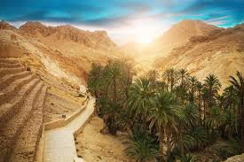
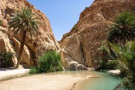
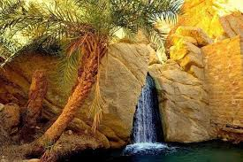
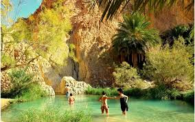
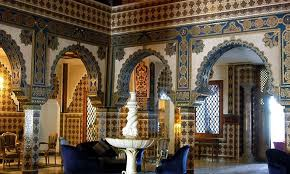
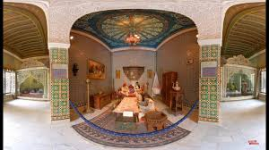
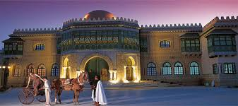
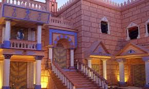
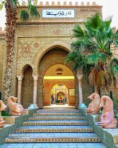

Tozeur
Tozeur – Perle du désert et des oasis
À propos de Tozeur
Le Gouvernorat de Tozeur est le symbole du Grand Sud tunisien. Il est réputé pour son oasis, considérée comme la plus belle de Tunisie, et se situe aux portes du désert du Sahara.
Emplacement
Tozeur est située dans le sud-ouest de la Tunisie, à environ 450 kilomètres de Tunis. La région est entourée de vastes palmeraies et borde le Chott el-Jérid, la plus grande plaine saline de Tunisie, classée au patrimoine mondial de l'Unesco.
Histoire
L'histoire de Tozeur remonte à l'Antiquité, connue alors sous le nom de Thusuros. C'était une étape majeure pour les caravanes traversant le Sahara, ce qui a assuré sa prospérité. La ville est connue pour son architecture vernaculaire unique en briques de terre crue. Le gouvernorat a été officiellement créé le 21 juin 1956.
Caractéristiques
- Capitale de la datte : La principale caractéristique économique de Tozeur est son rôle central dans l'industrie de la datte en Tunisie, exportant la célèbre variété "Deglet Nour" dans le monde entier.
- Patrimoine Architectural : La médina de Tozeur (Ouled El Hwadef), datant du XIVe siècle, est célèbre pour ses motifs géométriques en briques de couleur ocre.
- Tourisme et Culture : La région est un carrefour touristique majeur, offrant des sites naturels uniques comme les oasis de montagne (Chebika, Tamerza) et des attractions culturelles comme le musée Dar Cherait et le parc Chak Wak
Top Places à Visiter
1.Chott el-Jérid
La vaste étendue de lac salé offre des paysages spectaculaires, surtout au coucher du soleil.


2.La Palmeraie et les Oasis de Montagne
Promenez-vous dans la palmeraie de Tozeur ou visitez les oasis de montagne voisines de Chebika et Tamerza pour une immersion naturelle.




3.La Médina et le Musée Dar Cherait
Explorez l'architecture unique de la vieille ville et visitez le musée pour découvrir l'artisanat local et des scènes de la vie tunisienne.





- Le Minarét Ferkous : Réputé pour sa cuisine méditerranéenne et ses grillades.
- Restaurant Le Soleil: Un choix populaire offrant une cuisine méditerranéenne et tunisienne.
- Restaurant Dar Deda : Connu pour sa cuisine tunisienne authentique et son atmosphère.
- Scoop Café Resto : Un lieu agréable souvent loué pour son excellent service.
- Douar El Hafsi : Décrit comme une destination de visite incontournable, offrant une ambiance de café méditerranéen.
- Royal Mirage : Un café bien noté pour une expérience relaxante.